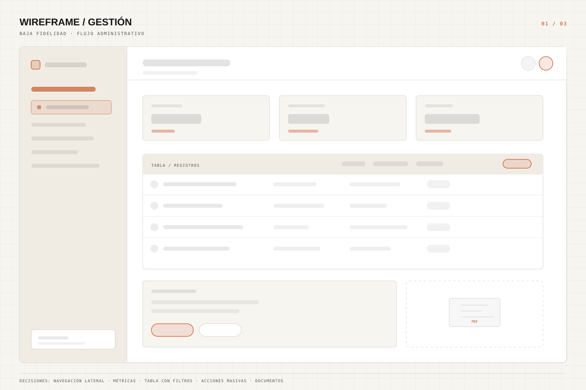

01 / Web app
2023
Comparsa de Carnaval
Sistema de gestión para una comparsa: inscripciones, documentación, generación de PDFs y envío de correos. El objetivo era reemplazar planillas y mensajes sueltos por un flujo único.
Resultado · Un solo flujo para inscripciones, PDFs y correos.
- React
- Redux
- Express
- MongoDB
- PDF-Lib
- Rol
- Full-stack
- Foco
- Automatización